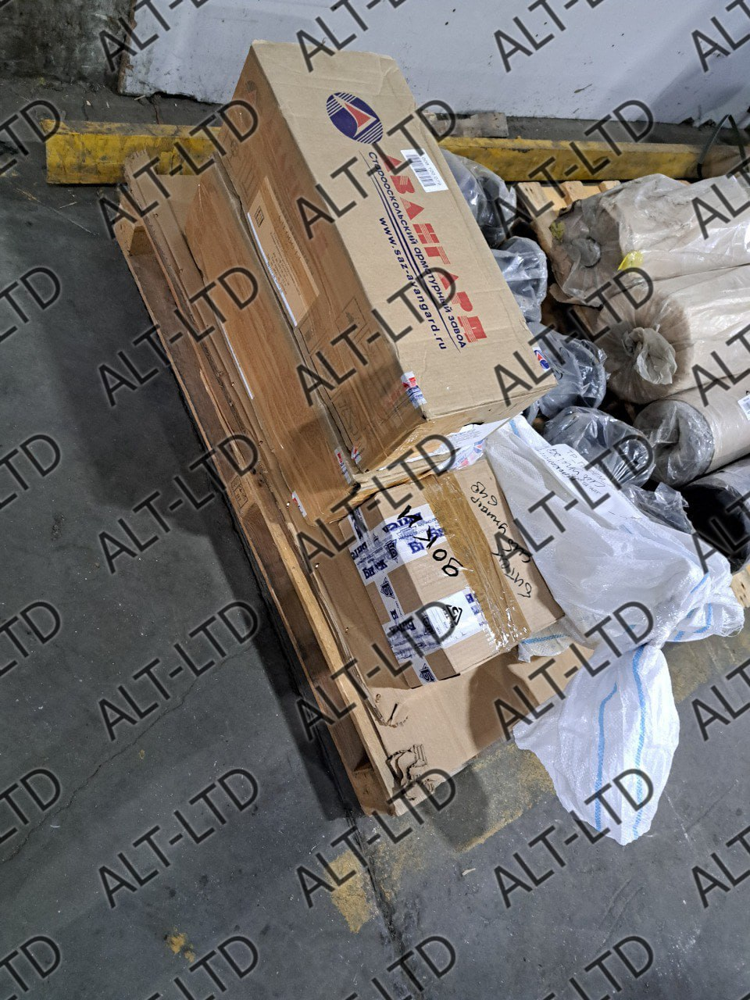

Учет расхода технической среды необходим во многих отраслях промышленности, ЖКХ, медицины и науки. Для реализации этой задачи нужны расходомеры – высокоточные счетчики (датчики), предназначенные для автоматизированного измерения жидкостей, газов, тепла и сыпучего сырья.
Специальное оборудование применяется для мониторинга, контроля и управления потоками ресурсов, проходящих через открытые каналы и трубопроводы. Разнообразие типов и конфигураций позволяет подобрать прибор под задачи любой отрасли: от теплоэнергетики и фармакологии до экологии и научных исследований.
В зависимости от назначения, целей и задач учета, датчики определяют объемный, массовый, линейный или нелинейный расход рабочего ресурса за интервал времени.
Установка расходомера газа, жидкости или воздуха гарантированно обеспечивает преимущества:
- высокая эффективность технологических процессов;
- безопасность производства (защита от перегрузок, ЧП);
- высокая точность коммерческого и технологического учета;
- автоматизация контроля расхода (дозирования, смешивания) сырья;
- повышение рентабельности производства.
Применение измерительных счетчиков оптимизирует технологические процессы, снижает расходы на энергоносители и воду. Установка датчиков на производствах помогает предотвратить аварии, вызванные утечками опасных веществ, и соблюсти требования по экологической безопасности.
Типы расходомеров
По параметру специфики применения выделяют приборы для измерения жидкости, воздуха, газа, сыпучих материалов и ротаметры.
По принципу действия счетчики расходомеры могут быть:
Вихревые. Оборудование на основе вихревого датчика, образующего вихри в технической среде. Преимущества: легкая конструкция без подвижных узлов и электродов, работа с большими потоками веществ. Не используется при сильной вибрации;
Тепловые. Выпускаются в различных вариантах расположения нагревательного элемента (внутри, снаружи трубы) и технологии нагревания. Общие характеристики – простая конструкция, бесконтактное и всенаправленное считывание, большой диапазон температур, измерение едких газов;
Электромагнитные. Надежные и высокоточные приборы для вычисления расхода электропроводимых жидкостей: щелочей, кислот, суспензий и воды. Чаще всего электромагнитный расходомер используется в промышленности и для научных исследований. Преимущества – большой диапазон динамических вычислений и сохранение скорости потока;